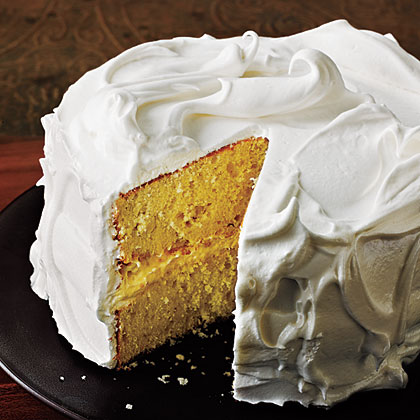

Whipped Perfection: Mastering the Art of Italian Meringue

Description
Indulge in the art of creating Italian Meringue, a fluffy and luxurious topping that adds a heavenly touch to desserts.
This is my tried-and-true recipe, perfected through countless batches, and it's my favorite accompaniment to Dominican cake.
However, its versatility extends far beyond; consider using it to adorn cupcakes, pies, tarts, or even as a filling for macarons or pavlovas.
To begin, gather your ingredients and prepare yourself for a journey into the world of delicate sweetness.
While I recommend following the recipe closely for best results, feel free to customize it to suit your preferences.
Whether you prefer a slightly sweeter meringue or a lighter texture, this recipe is adaptable to your taste.
While I encourage you to experiment with flavors and techniques, I can attest that following this recipe precisely yields consistently delicious results.
So go ahead, whisk up a batch of Italian Meringue, and prepare to be enchanted by its ethereal beauty and irresistible taste.
Ingredients
- 2 cups of water
- 1 lb and 8 oz (or 700 grams = 3 cups) of sugar
- 2 tbsp of vanilla
- ¼ or ⅛ tsp of cream of tartar (Optional)
- 8 oz of egg whites (1 cup or the egg whites of 4 eggs)
- Half a lemon or lemon extract (You can use any flavor of your preference)

Directions
NOTE: To prepare the meringue, you must keep the utensils scrupulously clean.
I suggest washing the preparation utensils with hot soapy water and drying them well before starting.
- Syrup Preparation: Mix 3 cups of sugar and 2 cups of water. Boil over medium-high heat.
If you have a candy thermometer (which I recommend if you haven't done this before), boil until it reaches 112°C (235°F).
If you don't have a thermometer, boil to the soft ball stage (it will be thick like pancake syrup but still transparent).
Make sure it doesn't burn or start to turn a golden color.
- Beating the Egg Whites: While the syrup is boiling, using the wire whisk attachment of the mixer, beat the egg whites for 30 seconds on low speed.
Increase the speed to medium and beat until they become very white and have very fine foam (about 3 minutes).
- Add the Syrup: Slowly, and in a very thin stream, add the syrup to the egg whites while beating
at high speed until everything is well incorporated and stiff peaks form (about 5 minutes). Optional: If you want a thicker consistency, you can add
¼ or ⅛ tsp of cream of tartar to the mixture.
- Last Steps: Add the vanilla, followed by the lemon extract (could be any flavor, eg., almond extract), beating until well incorporated and until
the meringue is at room temperature. The meringue should have stiff peaks, and much of it will gather in the center of the wire whisk attachment.
Things To Take Into Consideration
Here are some tips and relevant information to ensure your recipe turns out perfectly as expected. It's important to take
note of these tips because while the recipe may seem simple, it can be tricky to execute, and these pointers will help make the process less stressful.
- Soft Ball Stage: Pour a few drops of the caramel into cold water; it will form a soft ball of caramel in the water and will not dissolve.
- As mentioned before, it's crucial to keep the utensils meticulously clean.
I suggest washing the preparation utensils with hot soapy water and drying them well before starting.
- When separating the egg whites from the yolks, ensure that there is no trace of yolk in the whites;
otherwise, the meringue won't rise properly.
- The humidity and temperature in the environment can affect the outcome of the meringue.
On humid, rainy, or cold days, it's more challenging to achieve a proper result.
- Cream of tartar, a white powder with acidic pH known as "cream of tartar" in English, is used in baking to activate acid-base reactions.
In this case, it enhances the volume and texture of the meringue. It's inexpensive and lasts for years.
You can find it in the baking section of the supermarket.
- Please use a glass or stainless steel mixing bowl. A plastic bowl may not withstand the caramel's temperature,
and it's more challenging to clean to ensure it's completely grease-free.